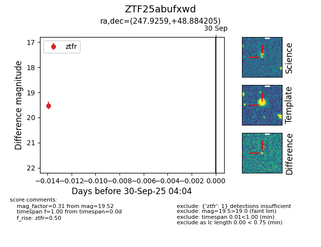

FINK: ZTF25abufxwd
Lasair: ZTF25abufxwd
ALeRCE: ZTF25abufxwd
ZTF25abufxwd (ztf,fink)
equatorial (ra, dec) = (247.9259,+48.88421)
galactic (l, b) = (75.7085,+42.73859)

last ztfr=19.52
1 ztfr detections